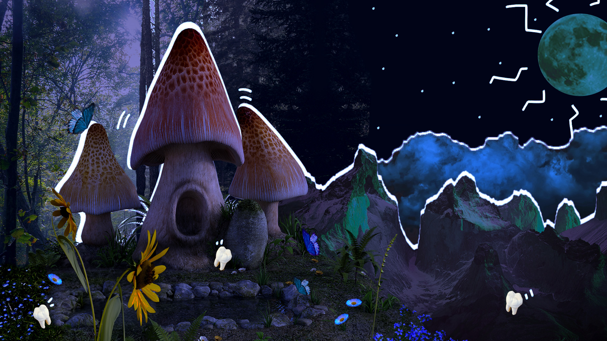
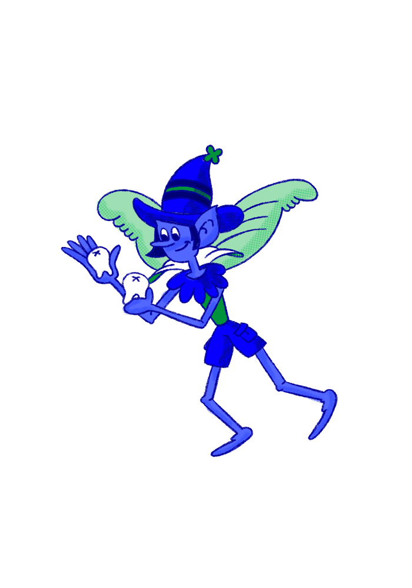
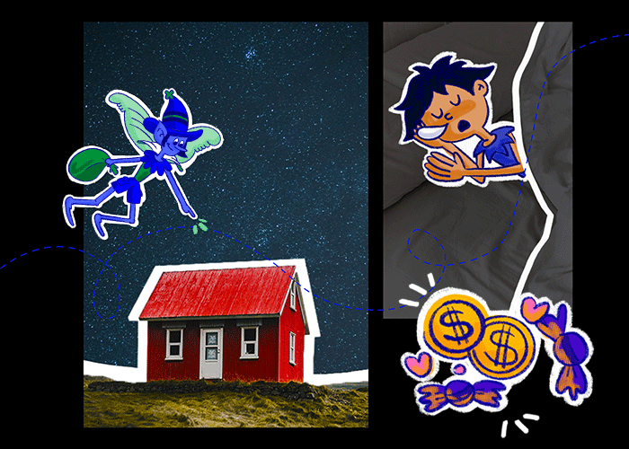
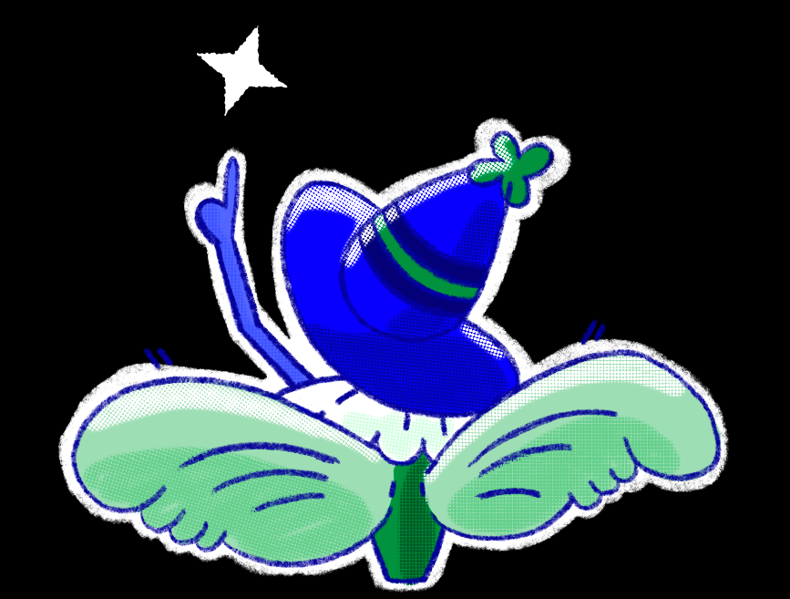
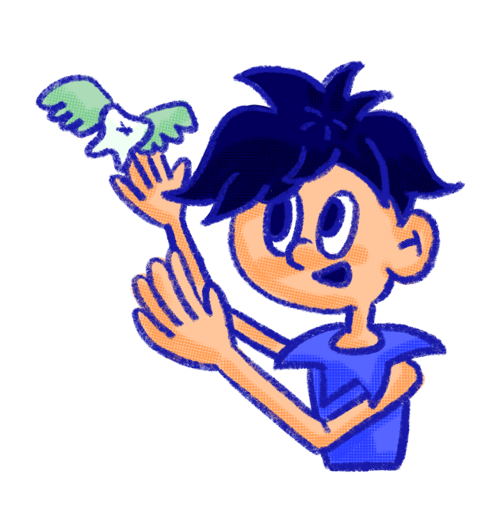
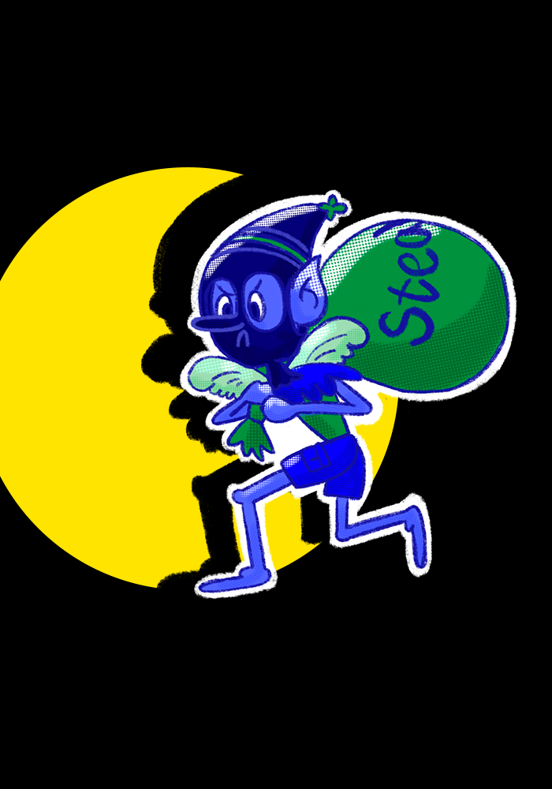
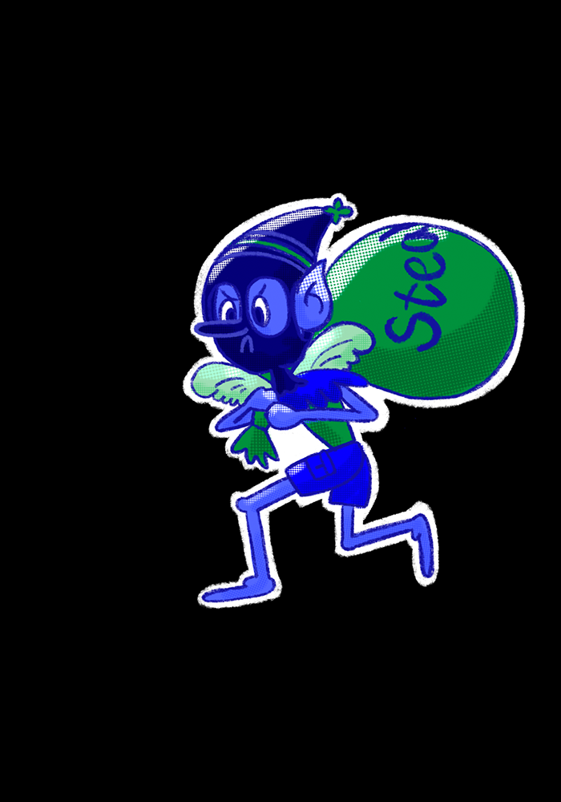
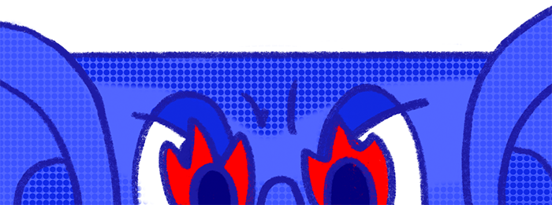

어린이들을 위한 이빨 경매 서비스, 스피디한 교정 시술과 충치 치료를 선별된 요정들이 함께! 오직 Tooth Fairy에서만 만나볼 수 있는 최고의 서비스를 경험하세요.


다들 한 번쯤 들어봤을 이빨요정 이야기!

설화 속에서 등장하는 이빨요정! 아이들의 헌 이를 새 이로 바꿔주는 인간에게는 무해한 정령입니다. 아이들이 젓니를 뽑은 날, 주머니에 빠진 이를 넣어 베개 밑에 두고 잠을 자면 이빨 요정은 그 이를 가져가고 돈과 행운을 두고간다는 이야기죠. 이빨요정은 아이들의 두려움을 달래주고 용기를 북돋아주는 소중한 친구입니다.
🌀급해요 급해🌀 이빨요정이 큰일났어요!

이빨요정의 세계는 철저한 경쟁사회 입니다. 어린이들의 이빨을 많이 모은 요정은 존경받는 등급으로 선정되어 더 크고 화려한 날개를 가질 수 있어요.

또, 무엇보다 지정된 어린이의 전담 이빨요정이 될 수 있습니다. 꿈꾸는 어린이와 함께 성장하는 일, 이빨요정들에겐 그 무엇과도 바꿀 수 없는 소중한 일이죠.
요정들은 언제나 그렇듯 매일 밤마다 날개뼈가 빠지도록 날아다니지만 요즘엔 이빨을 모으기가 참 쉽지 않아요.
어린이가 줄어들고 있는 시대! 이빨요정들의 삶도 무너지기 시작했습니다!


어린이들이 풍족했던 때에 이빨에 대한 대가로 소소한 용돈을 지불했던 것과 지금은 전혀 다릅니다!
이빨 값은 급등했고, 요정들의 경쟁은 치열해졌죠. 하지만 경제 관념이 없는 어린이들은 이기적인 요정들에게 마땅한 행운 값을 받지 못하거나 이빨을 도둑맞는 일이 빈번해지기 시작했어요

경쟁하라! 쟁취하라! 선택받아라!
누가, 어떻게 이빨을 먼저 정당하게 쟁취할 것인가!? 방법은 아주 명확하죠. 어린이의 선택을 받는다!